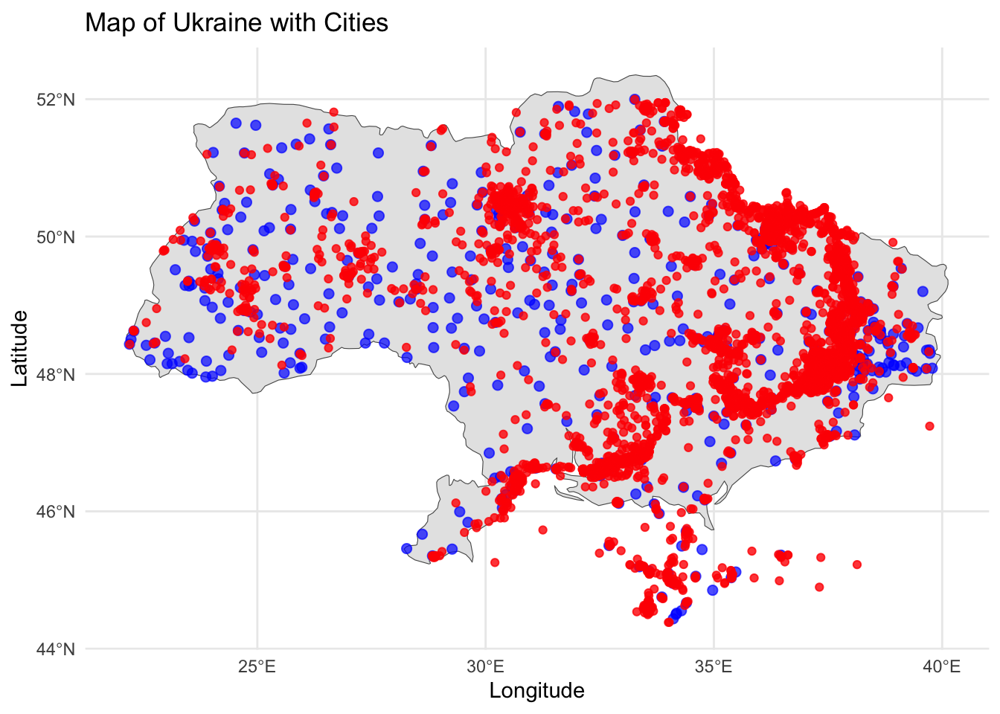
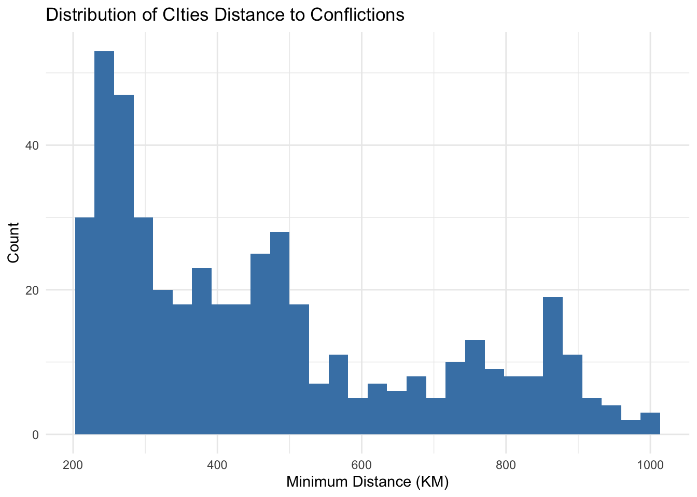
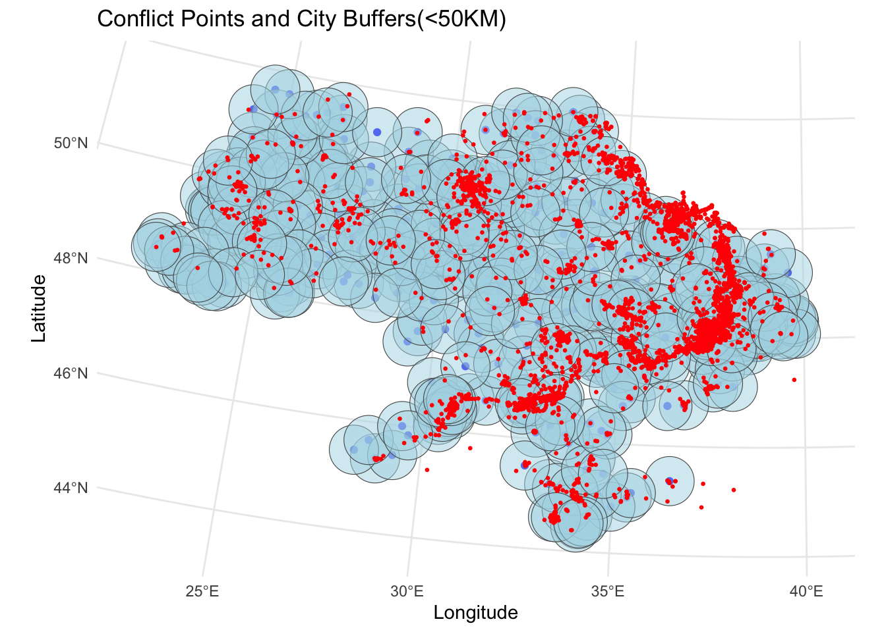
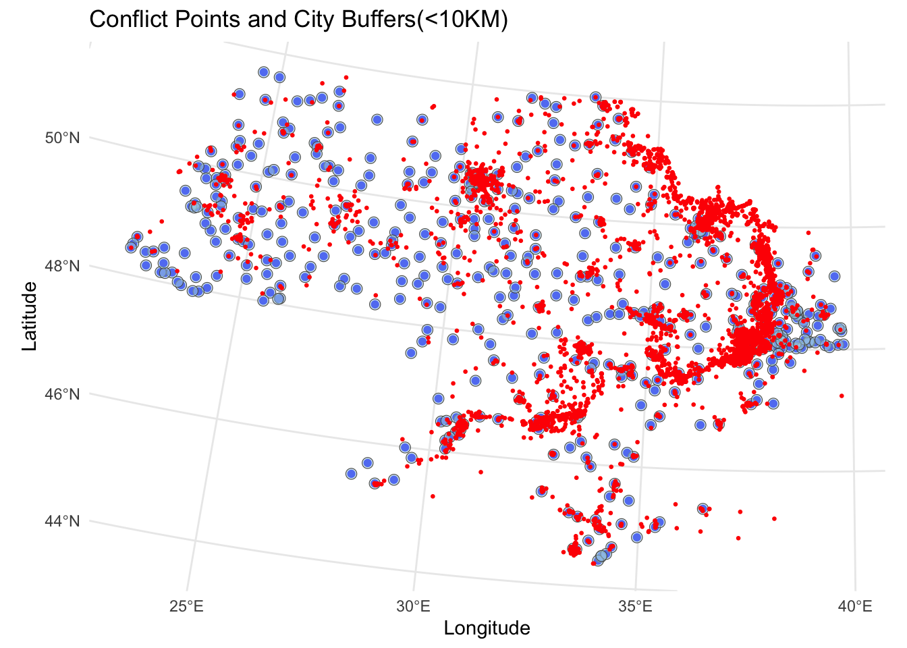

library(tidyverse) |> suppressPackageStartupMessages()
library(sf) |> suppressPackageStartupMessages()
library(mapview) |> suppressPackageStartupMessages()
library(ggplot2) |> suppressPackageStartupMessages()
library(leaflet) |> suppressPackageStartupMessages()
library(units) |> suppressPackageStartupMessages()
library(rnaturalearth) |> suppressPackageStartupMessages()
library(rnaturalearthdata) |> suppressPackageStartupMessages()Introduction
The Ukrainian-Russian war has lasted for nearly three years, causing huge and irreversible damage to world peace and economy, especially to ordinary people in both countries. However, this tug-of-war that lasted for several years also provided a verification of the strategies and tactics of large-scale military operations after World War II. Nearly 80 years have passed since World War II. Although the 40-year Cold War between the United States and the Soviet Union has promoted the development of science and technology and war theory, there is not enough practical basis to verify these advances.
The most recent full-scale war between the two military powers in the world should be the Gulf War in 1991. Iraq, known as the world’s sixth military power, was defeated by the United States in just half a year. This is tantamount to the advanced integrated sea, land and air strategy and tactics of the United States at that time, achieving strategic goals through precise decapitation and destruction of enemy key cities and facilities.
In the 30 years after the Gulf War, the world’s military powers are currently carrying out another military informationization reform, and this Ukrainian-Russian war can be a good verification of today’s military theory. This project will focus on whether Ukraine and Russia’s tactics are still centered around large cities.
Exploratory Data Analysis (EDA)
We will first have a roughly understanding about the distribution of large cities and conflict locations in Ukraine.
# Load global country boundaries
world <- ne_countries(scale = "medium", returnclass = "sf")
ukraine_boundary <- world %>% filter(name == "Ukraine")cities <- read.csv("worldcities.csv")
conflicts <- read.csv("event_1pd_latest_2024.csv")# filter ukraine data
ukraine_cities <- cities %>% filter(country == "Ukraine") %>%
select(city, lat, lng)# Filter the conflict data to remove outliers
conflicts <- conflicts %>%
filter(latitude >= 44 & latitude <= 52,
longitude >= 22 & longitude <= 40) %>%
select(lat = latitude, lng = longitude) %>%
distinct(lat, lng, .keep_all = TRUE)# Convert to spatial data frames
ukraine_cities_sf <- st_as_sf(ukraine_cities, coords = c("lng", "lat"), crs = 4326)
conflicts_sf <- st_as_sf(conflicts, coords = c("lng", "lat"), crs = 4326)# Draw the map of Ukraine and plot city points
ggplot() +
geom_sf(data = ukraine_boundary) +
geom_sf(data = ukraine_cities_sf, color = "blue", size = 2, alpha = 0.7) +
geom_sf(data = conflicts_sf, color = "red", size = 1.5, alpha = 0.8) +
labs(title = "Map of Ukraine with Cities",
x = "Longitude", y = "Latitude") +
theme_minimal()
We can see that most of the confliction is concentrated in the east of Ukraine, which is main target of Russia force in this war.
# Calculate distances between conflict events and cities
distances <- st_distance(ukraine_cities_sf, conflicts_sf)# Calculate the average distance for each city to all conflict points (in meters)
avg_distances <- apply(distances, 1, mean)
# Convert distances to kilometers
avg_distances_km <- avg_distances / 1000
# Add average distances to the city data for reference
ukraine_cities$avg_distance_to_conflicts_km <- avg_distances_km
# Display the overall average
average_distance_km <- mean(avg_distances_km)
cat("Average Conflict Distance to Cities (in km):", average_distance_km)Average Conflict Distance to Cities (in km): 466.9814ggplot(data = as.data.frame(ukraine_cities)) +
geom_histogram(aes(x = avg_distance_to_conflicts_km), bins = 30, fill = "steelblue") +
labs(title = "Distribution of CIties Distance to Conflictions",
x = "Minimum Distance (KM)",
y = "Count") +
theme_minimal()
Hypothesis Testing (Regression)
Null Hypothesis(H0): Conflict events are closer to major urban cities.
Alternative Hypothesis(H1): Conflict events are not closer to major urban cities.
# Transform to a projected CRS (e.g., UTM Zone 37N) for accurate distance calculations
ukraine_cities_projected <- st_transform(ukraine_cities_sf, crs = 32637)
conflicts_projected <- st_transform(conflicts_sf, crs = 32637)
# Define the buffer radius
buffer_radius <- 50000 # 50 km in meters
# Create buffers for all cities
city_buffers <- st_buffer(ukraine_cities_projected, dist = buffer_radius)
# Add a unique ID to conflict events
conflicts_projected$unique_id <- seq_len(nrow(conflicts_projected))
# Perform spatial join to find conflict events within city buffers
conflicts_in_buffers <- st_join(conflicts_projected, city_buffers, join = st_intersects)
# Ensure unique conflict events are counted
conflicts_in_buffers_unique <- conflicts_in_buffers %>%
distinct(unique_id, .keep_all = TRUE)
# Count the unique conflict events within buffers
conflicts_in_buffer_count <- nrow(conflicts_in_buffers_unique)
# Total number of conflict events
total_conflicts <- nrow(conflicts_projected)
# Validate counts
cat("Unique conflict events within city buffers:", conflicts_in_buffer_count, "\n")Unique conflict events within city buffers: 10755 cat("Total conflict events:", total_conflicts, "\n")Total conflict events: 10755 # Proportion of conflicts near cities
prop_conflicts_near_cities <- conflicts_in_buffer_count / total_conflicts
# Display the proportion of conflicts near cities
cat("Proportion of conflicts near cities:", prop_conflicts_near_cities, "\n")Proportion of conflicts near cities: 1 # Perform a proportion test
expected_proportion <- 0.50
prop_test_result <- prop.test(
x = conflicts_in_buffer_count,
n = total_conflicts,
p = expected_proportion
)
# Print the statistical test result
print(prop_test_result)
1-sample proportions test with continuity correction
data: conflicts_in_buffer_count out of total_conflicts, null probability expected_proportion
X-squared = 10753, df = 1, p-value < 2.2e-16
alternative hypothesis: true p is not equal to 0.5
95 percent confidence interval:
0.9995549 1.0000000
sample estimates:
p
1 We can see that the proportion that conflict is near 50km within city buffers is almost 1. These unusual results could be strong evidence of showing that Ukraine and Russian forces rallied almost all their forces around cities, or this result could be biased.
We can have a look on the maps showing the conflict points and city buffers.
library(ggplot2)
ggplot() +
geom_sf(data = ukraine_cities_projected, color = "blue") +
geom_sf(data = st_buffer(ukraine_cities_projected, dist = buffer_radius), fill = "lightblue", alpha = 0.5) +
geom_sf(data = conflicts_projected, color = "red", size = 0.5) +
labs(title = "Conflict Points and City Buffers(<50KM)", x = "Longitude", y = "Latitude") +
theme_minimal()
Since the buffer radius of 50km might not be persuasive, another test have been done using the radius of 10km.
# Define the buffer radius
buffer_radius <- 10000 # 10 km in meters
# Create buffers for all cities
city_buffers <- st_buffer(ukraine_cities_projected, dist = buffer_radius)
# Add a unique ID to conflict events
conflicts_projected$unique_id <- seq_len(nrow(conflicts_projected))
# Perform spatial join to find conflict events within city buffers
conflicts_in_buffers <- st_join(conflicts_projected, city_buffers, join = st_intersects)
# Ensure unique conflict events are counted
conflicts_in_buffers_unique <- conflicts_in_buffers %>%
distinct(unique_id, .keep_all = TRUE)
# Count the unique conflict events within buffers
conflicts_in_buffer_count <- nrow(conflicts_in_buffers_unique)
# Total number of conflict events
total_conflicts <- nrow(conflicts_projected)
# Validate counts
cat("Unique conflict events within city buffers:", conflicts_in_buffer_count, "\n")Unique conflict events within city buffers: 10755 cat("Total conflict events:", total_conflicts, "\n")Total conflict events: 10755 # Proportion of conflicts near cities
prop_conflicts_near_cities <- conflicts_in_buffer_count / total_conflicts
# Display the proportion of conflicts near cities
cat("Proportion of conflicts near cities:", prop_conflicts_near_cities, "\n")Proportion of conflicts near cities: 1 # Perform a proportion test
expected_proportion <- 0.50
prop_test_result <- prop.test(
x = conflicts_in_buffer_count,
n = total_conflicts,
p = expected_proportion
)
# Print the statistical test result
print(prop_test_result)
1-sample proportions test with continuity correction
data: conflicts_in_buffer_count out of total_conflicts, null probability expected_proportion
X-squared = 10753, df = 1, p-value < 2.2e-16
alternative hypothesis: true p is not equal to 0.5
95 percent confidence interval:
0.9995549 1.0000000
sample estimates:
p
1 ggplot() +
geom_sf(data = ukraine_cities_projected, color = "blue") +
geom_sf(data = st_buffer(ukraine_cities_projected, dist = buffer_radius), fill = "lightblue", alpha = 0.5) +
geom_sf(data = conflicts_projected, color = "red", size = 0.5) +
labs(title = "Conflict Points and City Buffers(<10KM)", x = "Longitude", y = "Latitude") +
theme_minimal()
We can still see that the proportion that conflict is near 10km within city buffers is almost 1. This means that conflictions is always around cities, which means that Ukraine and Russian forces are still targeting on cities in this war.
Conclusion
The results of this project provide compelling evidence that the Ukrainian-Russian war has overwhelmingly centered around urban areas. Nearly all conflict events occurred within 50 kilometers of cities, highlighting the strategic importance of urban centers in modern warfare. This pattern aligns with historical observations of military tactics, where cities often serve as key targets due to their economic, logistical, and symbolic value.
The concentration of conflict near cities suggests that both Ukrainian and Russian forces have adopted strategies that prioritize control over urban areas. These findings underscore the enduring relevance of urban-centric military operations, even as warfare evolves in the era of advanced technologies and informationization. Despite advancements in military theory and tools over the past several decades, such as precision-guided strikes and decentralized operations, the fundamental significance of cities as pivotal nodes in large-scale conflicts remains unchanged.
This conclusion reinforces the notion that cities are not only strategic targets but also critical theaters for achieving broader military objectives. As seen in the Gulf War and reaffirmed in this conflict, the ability to control or disrupt urban centers can decisively influence the outcome of war. Moreover, the urban focus of modern warfare has profound implications for civilians, as it amplifies the human and economic toll of conflict in densely populated areas.
The Ukrainian-Russian war thus serves as a vital case study for understanding contemporary military tactics and validating post-Cold War military theories. While technological advancements have transformed how wars are fought, the geographic focus on urban centers underscores a continuity in military strategy that has persisted since World War II. Future analyses of this conflict should explore how emerging technologies, such as drones and cyberwarfare, are integrated into these urban-centric tactics and their potential to reshape the landscape of modern warfare.
Reference
https://github.com/zhukovyuri/VIINA/?tab=readme-ov-file
https://simplemaps.com/data/world-cities
Urban-Centric Warfare: Analyzing the Geographic Patterns of Conflict in the Ukrainian-Russian War Urban-Centric Warfare: Analyzing the Geographic Patterns of Conflict in the Ukrainian-Russian War Urban-Centric Warfare: Analyzing the Geographic Patterns of Conflict in the Ukrainian-Russian War DSAN 6750 / PPOL 6805: GIS for Spatial Data Science DSAN 6750 / PPOL 6805: GIS for Spatial Data Science